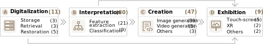

About
Originating in the Han Dynasty, Traditional Chinese Painting (TCP) has been one of the primary art forms in China. Artistic expressions are depicted on paper by brushes dipped in black or colored ink, TCP carried the author's artistic expression, and also insinuated the criticism of society, philosophy, and politics of the time. Existing studies involve TCP’s history, interpretation, and appreciation of certain masterpieces, as well as different styles and techniques. The development of computer technology has improved the efficiency of TCP research. Recently, advanced computer vision algorithms have made great progress in natural image perception and generation. In order to learn more about how computer technology may be applied in TCPs, we systematically evaluate the literature on relevant topics such as computer vision, human-computer interaction, and data visualization. pecifically, our contributions are summarized as:
Leverage the “Six Principles” to organize 93 articles.
Review the analysis process of computer technology applied to TCPs (Section 4) and the detailed classification of the technology.
Explore study opportunities and challenges in conjunction with professionals.
Corpus
We construct a literature corpus based on keyword- and relation-search methods. During keyword research, we paid particular attention to a set of TCP-related keywords (e.g., “Chinese landscape painting”, “Chinese Ink Wash Painting”, and “Chinese Brush Painting”). After such a round of paper selection and filtering, 93 papers are obtained.
With iterative discussion with TCP experts, we code these papers from three perspectives: research scope in TCP, specifically-targeted problem, and used computer-based methods.

Overview
The Six Principles of Painting
were proposed in the sixth century to serve as the grading standards of TCP. They have remained influential to this day in some of the most important considerations for drawing and appreciating TCP. Due to their extreme importance, we were inspired to employ the Six Principles as a coding scheme to examine the focused topics of recent literature. We selected the translations collected in to clarify these principles in the following sections.
Computational Techniques
We discussed computational techniques applied to TCPs. Compared with natural images, TCPs are similar in the modality of pictures yet different in technique details for understanding and creation. We organize the techniques from three perspectives as follows:
What tasks are the computational techniques used for？
How does the model extract features for these tasks?
How does the model render the newly generated paintings?
Analytical Framework
We proposed a framework of applying computational techniques in TCPs based on the state-of-the-art and domain experts. The framework involves four typical stages, from the digitalization and interpretation of existing paintings, to the creation of new artworks. These three stages will also serve the purpose of exhibition.
We discussed computational techniques applied to TCPs. Compared with natural images, TCPs are similar in the modality of pictures yet different in technique details for understanding and creation. We organize the techniques from three perspectives as follows:
What tasks are the computational techniques used for？
How does the model extract features for these tasks?
How does the model render the newly generated paintings?